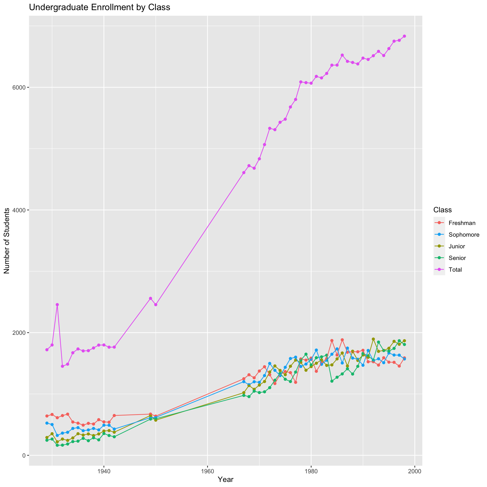

Enrollment Distribution
Today, Duke has a medium-sized undergraduate body, with about 6.8 thousand students. The last century has seen a significant increase in enrollment, and here we will break down these students by class to determine any changes or relations between the numbers. What do the proportions of each classes say about student enrollment and more importantly, student retention?
Currently, Duke has one of the highest freshman retention rates in the country, with about 98% of students returning for their sophomore year. This can be compared with the national average of 69% and the North Carolina average of 66%. As of 2017, Duke’s four-year graduation rate was around 95%, and six-year graduation rate has remained around 94%-96% for the last decade. Retention and graduation rates are important indicators of student achievement as they give insight on how many students are able to actually complete their degrees on time, and not simply enroll at the school.

Taking a look at Figure 1, we can snapshot the first and last years we have data on, and see what major changes have occurred. In 1929, the number of students decreased for each class from freshman to senior year. This indicates consistent drop-out rates each year. The 1970s-1990s saw many erratic changes, but by the end of the 1990s it appears there were more upperclassmen than underclassmen, presumably due to an increase in transfer students and gap year students. The trend of gradually decreasing numbers by class appears to have continued until the 1950s, in which the numbers seem to converge and started to vary once more in the 70s. It is worth noting that there are some significant gaps in the data, which make it hard to assess the validity of the trends during these few decades. However, we are able to still delineate the general pattern.
Figure 2 helps us visualize the changes in class proportions. We can see the increase in retention rates in the gradual evening-out of the four classes by the late 1990s. On the far left, the size of the freshman class far exceeded those of upper classes, some years coming close to making up 50% of the undergraduate body, but the classes even out significantly as we move towards the right.
Note:
There were limitations in the collection of this data beyond just the missing years. The reports in the Duke Archives had only enrollment by semester, so the numbers used are from the fall semester reports each year. Additionally, the total enrollment each year is not an exact sum of the numbers recorded for each class, as I discounted the students recorded as “Special” or “Advanced Freshman”. However, these numbers were marginal and would not greatly effect the results.